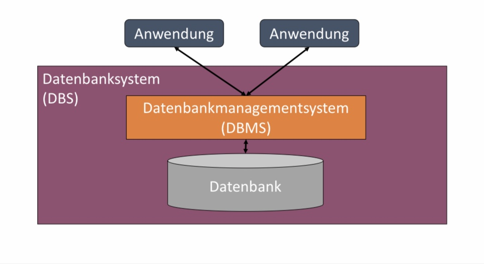
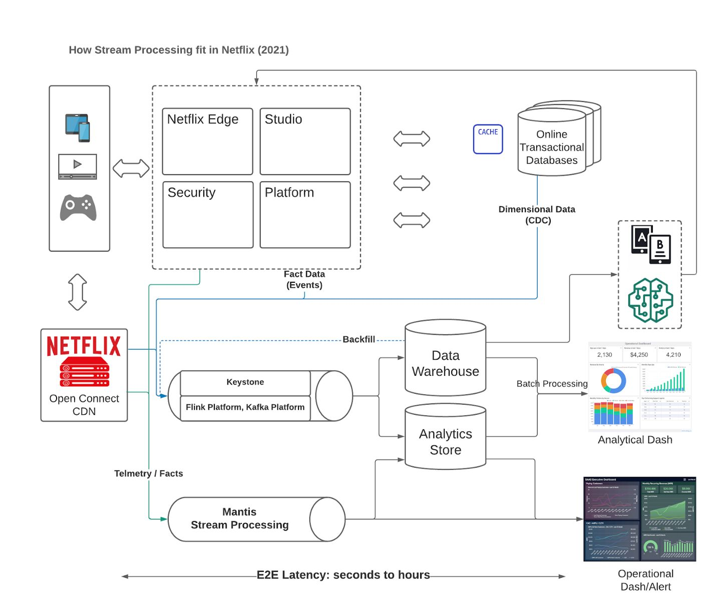
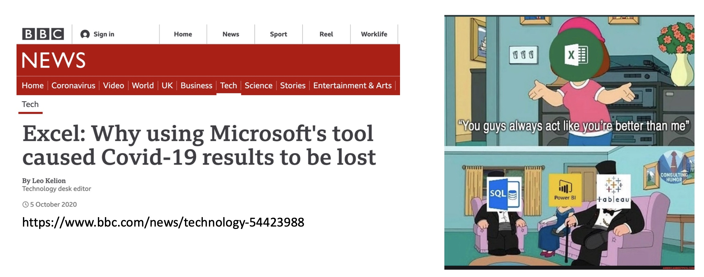
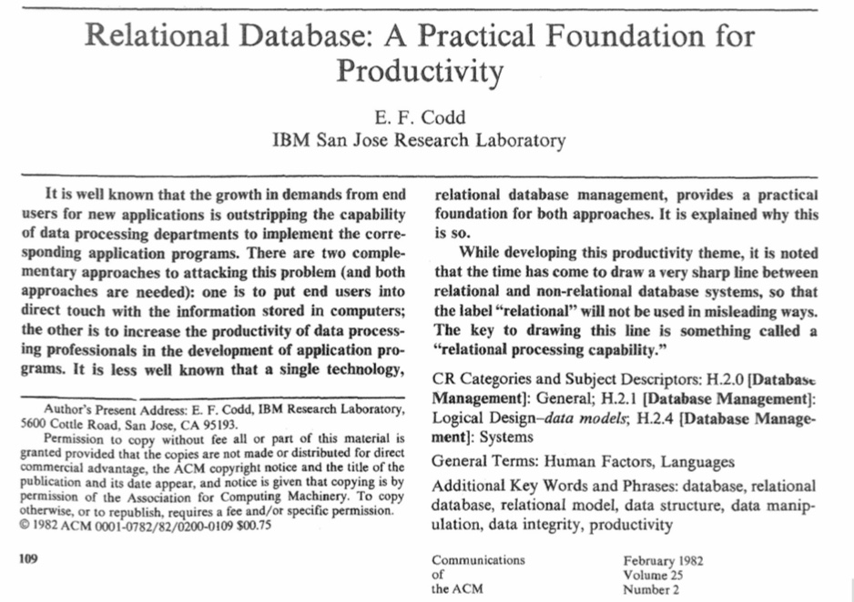

1. Einführung#
Bevor wir den Mehrwert von Datenbanksystemen erkennen können müssen wir uns erst einmal über deren Zweck klar werden. Insbesondere wollen wir festhalten was Daten sind und welche digitale Artefake zusammen ein Datenbanksystem bilden.
1.1. Was sind Daten#
Datenbanksysteme beherbergen Daten. Unter Daten verstehen wir digitale Repräsentationen von Dingen, Entitäten, Wissen und Informationen aus der wirklichen Welt. Die digitale Repräsentation von Daten kann hierbei unterschiedlich sein. Daten können strukturiert (tabellarisch) oder unstrukturiert (Fließtext) vorliegen. Daten können textuell oder multi-medial sein.
Um mit Daten zu arbeiten, ergeben sich folgende Kernfragen:
Welche Daten speichere ich?
Wie speichere ich die Daten?
Wie frage ich Daten ab?
Wie erledige ich all dies effizient und sicher, wenn die Menge der Daten zu groß wird?
Die Antworten auf diese Fragen könnten sich je nach Anwendungsgebiet und Datenlage unterscheiden. Es haben sich aber eine Reihe von Anforderungen so durchgesetzt, dass es möglich ist Datenbankensysteme so zu entwickeln, dass viele verschiedene Klassen von Datenverarbeitungsproblemen abgedeckt werden.
1.2. Aufbau eines Datenbanksystems#
Bevor wir die Aufgaben eines Datenbanksystems genauer betrachten, wollen wir nochmal die Begriffe: Datenbank, Datenbanksystem und Datenbankmanagementsystem trennen. Ein Datenbanksystem besteht aus der Datenbank und dem Datenbankmanagementsystem (DBMS). Die Datenbank setzt sich aus den Daten selbst und den Metadaten zusammen, die die Daten beschreiben. Das DBMS ist eine Softwarekomponente, die server-basiert arbeitet. Es ermöglicht den Zugriff auf eine oder mehrere Datenbanken. Somit können mehrere Anwendungen und Nutzer:innen als Klienten eine oder mehrere Datenbankserver nutzen.
{kind=link}
1.3. Aufgaben eines Datenbanksystems(DBMS)#
Die primären Anforderungen an ein Datenbanksystem sind …
Unterstützung des Datenmodells
Bereitstellung einer Anfragesprache
Data definition language (DDL)
Data manipulation language (DML)
Effiziente Anfragebearbeitung
Robustheit
Wahrung der Datenintegrität (Konsistenz etc.)
Abfangen von Systemfehlern
Speicherverwaltung (RAM & Disk)
Transaktionsmanagement
Auch im Mehr-Benutzer-Betrieb
Zugangsverwaltung & Zugangskontrolle
Beispiel(Netflix): Betrachten Sie das Architekturbild zu dem Streamingdienst Netflix. In dieser Architektur sehen Sie an vier verschiedenen Stellen den Einsatz von Datenbanksystemen. Zunächst sind Endgeräte mit mehreren (verteilten) Online transaction processing (OLTP) -Datenbankmanagementsystemen verbunden. Das sind Systeme, auf denen viele Transaktionen pro Sekunde parallel laufen können. Das heißt, dass hierbei Daten häufig verändert werden müssen, jedoch das Gesamtsystem immer einen konsistenten Zustand beibehalten muss. Dann sehen wir sogenannte Stream-processing Systeme, also Datenbanktechnologien, die sich um die effiziente Abwicklung von Datenströmen kümmern. Daran angedockt sind sogenannte Datawarehouses, die über die Zeit Informationen über den gesamten Streamingprozess für die spätere Analyse anhäufen. Im Unterschied zu den OLTP Datenbankmanagementsystemen sprechen wir hier von Online analytical processing (OLAP)-Systemen, die zwar keine häufigen Datenänderungen erfahren, aber sehr komplexe analytische Anfragen effizient beantworten müssen. Das Beispiel zeigt, dass selbst innerhalb eines einzigen Dienstes verschiedene DBS eingesetzt werden müssen, wobei sich die Aufgaben dieser Systeme unterscheiden.
{kind=link}
Beispiel(CSV-Datei): Während der COVID19-Pandemie sind Forscher:innen in Großbritannien große Datenmengen verloren gegangen, weil diese lediglich als Excelsheets gespeichert waren. Während eine Excel-Datei oder eine CSV-Datei erlaubt übersichtlich tabellarische Informationen abzuspeichern, ist deren Anwendung nur unter bestimmten Situationen sinnvoll. In diesem speziellen Fall, sind Daten beim Laden in dem Tool verloren gegangen, da Excel lediglich 65,000 Zeilen im XLS-Format verarbeiten konnte. Zudem gab es keine sinnvollen Fehlermeldungen oder andere Sicherheitsmechanismen, die diese Probleme aufzeigen hätten können.
Grundsätzlich ist es nicht ratsam alle Daten als eine Datei abzuspeichern, da punktelle Veränderungen sowohl parallele Bearbeitung der Datenbank zu Konsistenzproblemen führen können. Weitere Punkte wie Zugriffskontrollen müssen vom Betriebssystem übernommen werden. 
{kind=link}
1.4. Anforderungen an DBMS nach Codd 1982#
Auch wenn es verschiedene DBMS mit verschiedenen Schwerpunkten gibt, gibt es eine Reihe von Standardanforderungen, die bereits vor über 40 Jahren von Edgar F. Codd formuliert wurden. In dem unten abgebildeten Papier beschreibt Codd (Turing Award Gewinner), den Blueprint für die weitverbreiteten relationalen Datenbanksysteme. In dieser Vorlesung werden wir uns hauptsächlich auf diese Art von Datenbanksysteme beziehen.
{kind=link}
Codd formuliert die folgenden Grundbausteine für ein sinnvolles und nutzbares Datenbankmanagementsystem (DBMS).
Integration: Daten sollen einheitlich und frei von Redundanz verwaltet werden. Hierzu wird ein entsprechendes Datenmodell benötigt. In dieser Vorlesung werden wir das relationale Datenmodell kennenlernen.
Operationen: Das System soll Grundoperationen zum Definieren, Speichern, Abfragen und Ändern von Daten bereitstellen.
Deklarativ: Die Operationen sollten deklarativ definiert werden können. Man soll direkt beschreiben können, welche Daten man haben will, ohne darüber nachdenken zu müssen, wie diese zusammengesetzt werden sollen. Das “Wie” soll das DBMS übernehmen.
Sichten: Das System soll verschiedene Anwendungen, Prioritäten mit entsprechenden Zugriffskontrollmechanismen und Umstrukturierungen erlauben.
Integritätssicherung: Das System soll Methoden und Instrumente für die Wahrung der Integrität der Daten, das heißt dessen Korrektkeit und Konsistenz bereitstellen.
Transaktionen: Das System soll mehrere DB-Operationen als Funktionseinheit betrachten können und Erfolg bzw. Misserfolg einer solchen Einheit verbuchen können.
Synchronisation: Parallele Transaktionen sollen koordiniert werden, sodass die Daten immer in einem konsistenten Zustand sind.
Datenschutz: Das System soll Instrumente zum Ausschluss nicht-authorisierter Zugriffe bereitstellen.
Datensicherung: Es muss möglich sein Daten nach Systemfehlern wiederherstllen zu können.
Persistenz: Große Datenmengen sollten auf sekundäre und terziere Speicher geladen und effizient wieder abrufbar gemacht werden.
Katalog: Das System sollte Daten über die verwalteten Daten führen. Es soll möglich sein auf diese Metadaten zuzugreifen.
1.5. Fragen#
Die hier verwendete Version des Multiple-Choice-Trainers von EILD.nrw wird über GitHub-Pages gehostet und in das Skript eingebunden.
Alle Fragen und Kategorien befinden sich zurzeit in Überarbeitung und sind nicht final.
Für den vollen Funktionsumfang wird empfohlen einen auf Firefox basierten Browser zu nutzen, ansonsten können unerwünschte Nebeneffekte entstehen.